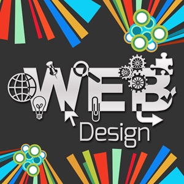

Welcome to SDS, your premier destination for innovative digital
solutions tailored to meet the needs of modern businesses. At SDS,
we understand the importance of establishing a strong online
presence in today's digital age.

The 5 Essential Tips for Creating Stunning Front-End Designs
In the ever-evolving world of web development, front-end design plays
a crucial role in captivating users and providing an exceptional user
experience. Whether you're a seasoned developer or just starting out,
mastering the art of front-end design can take your websites to the
next level. In this comprehensive guide, we'll explore five essential
tips for creating stunning front-end designs that engage users and
leave a lasting impression.
Understand Color Theory
The Importance of Color:
Choose a cohesive color palette that aligns with your brand's
personality and message.
Use contrasting colors to create visual hierarchy and draw
attention to important elements.
Pay attention to color psychology and how different colors evoke
specific emotions and associations.
Test your color choices across different devices and screen
resolutions to ensure accessibility and readability for all
users.
Example CSS for color scheme:
body { background-color: #f8f8f8; color: #333333; }
Use fluid layouts and flexible grids to adapt your designs to
different screen sizes and orientations.
Optimize images and media for faster load times and better
performance on mobile devices.
Implement media queries to apply specific styles based on device
characteristics, such as screen width and orientation.
Test your designs across various devices and screen resolutions
to ensure compatibility and responsiveness.
Prioritize Accessibility
The Importance of Accessibility:
Adhere to web content accessibility guidelines (WCAG) to ensure
that your designs are accessible to users with disabilities.
Provide alternative text for images, videos, and other non-text
content to make your designs more accessible to screen readers
and other assistive technologies.
Implement keyboard navigation and focus management to ensure
that users can navigate your site using only the keyboard.
Ensure sufficient color contrast for text and interactive
elements to improve readability for users with low vision or
color vision deficiencies.
Stay Updated with Trends
The Importance of Staying Updated:
Follow industry blogs, forums, and social media channels to stay
informed about the latest trends and developments in web design.
Attend conferences, workshops, and webinars to learn from
industry experts and gain insights into emerging technologies
and best practices.
Experiment with new design trends and techniques in your
projects to stay ahead of the curve and differentiate your
designs from the competition.
Collaborate with other designers and developers to share
knowledge, exchange ideas, and learn from each other's
experiences.
Mastering the art of front-end web development
requires attention to detail, creativity, and a commitment to
continuous learning.
By incorporating these essential tips into your
design process, you can create stunning front-end designs that
captivate users and drive engagement.
Author
Name:Simeon Tchameu
Title:Web Developer | Digital Marketer | Web Journalist
School:Udacity
Bio:Detail-oriented and results-driven front-end web developer, with a strong professional background in desktop support, AWS cloud services, front-end web development, and digital marketing.